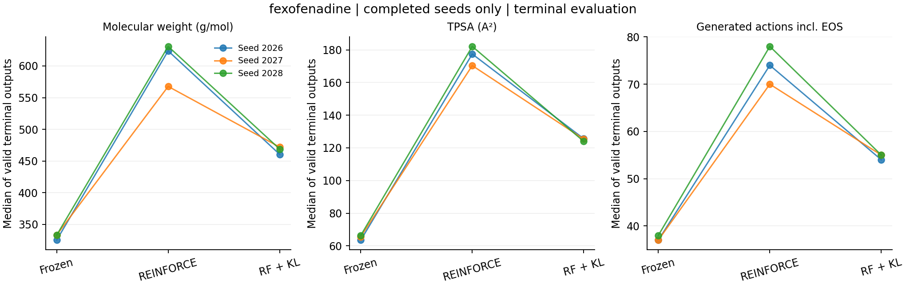
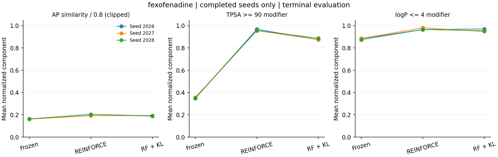
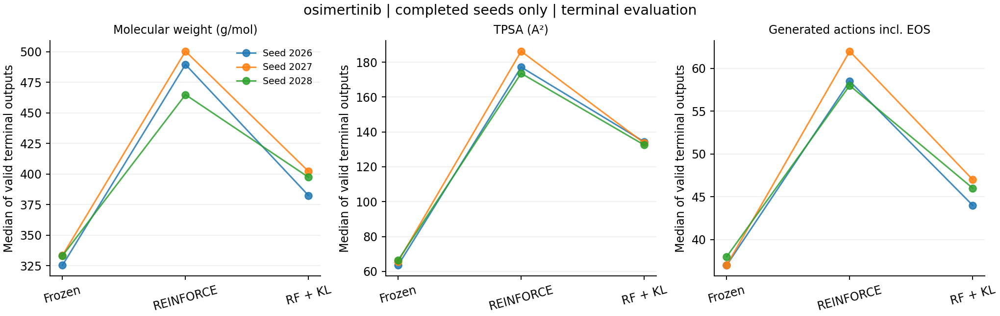
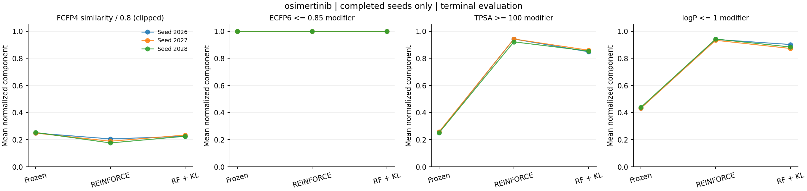

官网于 2026-11-13 复核：项目占课程成绩 50%；五项各占项目成绩 20%；报告截止 2026-12-06；第13–14周全员参与线下展示与问答，具体场次和时长尚未在该公告公布。
实时正式结果汇总 · 分子案例与失败 · 长度分层诊断 · 主张与证据边界 · 数学与方法 · 官网原要求 · 运行状态
当前案例覆盖取得原始账本的 18/18 次正式运行。




当前：问题和三条件已明确；正在形成主结果，尚未定稿
完成标准：用可检验的问题连接课程目标、有限预算和分子场景，而不是泛泛展示训练效果。
尚需完成：用全部任务/种子验证结论范围；明确为何本项目值得研究，以及不能回答的问题
../proposal/latex/main.tex · contract.json · method_notes.html · evidence/objective_mismatch.json
当前：梯度、KL、评分器、预算边界和原始账本已检查；仍需完整正式运行验收
完成标准：每个公式对应到实现和可执行检查；分析目标与解码映射的关系，不堆不必要的算法。
尚需完成：核验全部18次正式运行的源文件与账本；将数学例子与真实观察分开；完整记录远端依赖版本和硬件时间
src/study.py · src/check_theory.py · evidence/theory.json · evidence/scorer_check.json · evidence/boundary_check.json · evidence/input_manifest.json
当前：正式比较进行中；已有完整对照和案例，但不是全18次最终结论
完成标准：预先固定主协议，全部种子可见，独立评估，报告负结果、计算成本和机制证据。
尚需完成：完成并独立核验剩余正式运行；报告全部种子与配对差异，不以1024样本冒充1024次训练；预算允许时对具体机制做聚焦实验；未做则保留为假设；避免把独特分子数量、指纹距离、骨架覆盖混成单一多样性结论
contract.json · case_protocol.json · verify_ledgers.py · evidence/remote_ledger_check.json · evidence/cases/cases.json
当前：已有方法说明、自动结果页和分子案例；最终报告与slides未完成
完成标准：每项主张都有证据、图表、反例和局限；展示主线简洁，技术细节在备份页可追溯。
尚需完成：完整主结果到齐后写最终叙事；视觉检查全部图、表、分子结构及单位；定稿引用与复现入口；根据正式展示时长裁剪；不能捏造老师未公布的时长要求
method_notes.html · evidence/main_summary.html · evidence/cases/index.html · presentation_plan.json
当前：proposal分工存在；实际成员贡献与理解尚待逐人核实，不能由自动化代替
完成标准：三人均能说明问题、主要数学、关键实现和结果；真实贡献有记录，不按预定分工虚构已完成工作。
尚需完成：成员本人补充、确认实际工作；逐人解释代码与公式，做真实问答排练；全员能跨越自己分工回答核心追问
../proposal/latex/main.tex · contribution_ledger.json · defense_questions.json
| 1 | 研究问题：RL改变了什么？ | 引出生成质量与候选发现的区别；说明分子评分是代理目标 |
| 2 | 同一个ChemGPT，三个公平条件 | MDP、冻结模型/RF/RF+KL、相同查询预算及额外计算成本 |
| 3 | 目标与实现如何一致 | REINFORCE+LOO+轨迹KL；只留一条核心公式，证明放备份 |
| 4 | 我们怎样排除实现错误 | 梯度枚举、EOS/logprob/参考冻结、评分器与账本复算证据 |
| 5 | 两任务、三种子：全部结果 | 搜索AUC与终态均值分开；逐种子点，不隐藏负结果 |
| 6 | 提高的是哪些奖励分量？ | 相似度、TPSA、logP分布与分量饱和率；先证据再解释 |
| 7 | 案例：典型输出与最好候选 | 固定规则选择，展示原生结构和每个性质；明确极值不代表典型 |
| 8 | 没有被奖励覆盖的性质 | 分子量、长度、TPSA漂移与失败；不将高分称为更好的药物 |
| 9 | KL约束与目标不一致 | 轨迹/分子KL区别；优化均值不保证top-k；区分理论恒等式和实测 |
| 10 | 结论、局限与各人贡献 | 仅保留证据支持的主张；说明负结果、计算限制和可复现入口 |
以下是准备材料，不表示任何成员已完成排练或掌握全部内容。计划分工与实际工作分开记录。
有限长度token轨迹下的期望MPO奖励减去相对固定初始策略的轨迹KL。候选top10 AUC是评价指标，不是与训练目标完全相同的函数。
对应材料完整前缀和时间保留后续生成、终止及终局评分需要的信息；同一个末token可对应不同分子结构前缀，不能据此合并状态。
对应材料这里最大256动作且奖励有界，回报有限。γ<1会额外偏好更早终止，改变问题；不能直接用折扣收缩证明推断当前策略梯度收敛。
对应材料我们先研究课程直接覆盖、容易核对的on-policy REINFORCE，隔离参数更新与固定先验正则。PPO并非评分要求，也不能凭算法名字保证更好；扩展需独立动机和预算公平。
对应材料采样后更新前在同一策略上重算完整轨迹log-prob，支持反向传播；mask、温度、BOS/EOS和参数必须与采样一致。已做概率一致性检查，不是用别的策略伪装on-policy。
对应材料LOO只用其他独立轨迹的回报，条件于它们时与本条轨迹动作独立，乘score function的期望为零；singleton用历史baseline。当前样本也进均值会在此设置缩放期望梯度，不能忽略。
对应材料完整求导多出的−βE[∇logpθ]为零。剩余梯度可用detach(R−βlogratio−b)乘∇logpθ无偏估计；该结论依赖固定支持、固定奖励和固定prior。
对应材料一般不等。固定多对一解码下，轨迹KL=输出KL+条件编码KL；后者非负。有限编码子集诊断不是全空间KL的估计。
对应材料确定性评分可以按canonical分子缓存，但不同采样轨迹及其概率属于原策略分布。未经权重修正删重会改变梯度估计对象。
对应材料每个run独立记首次有效canonical identity；冻结模型拿相同预算；重复和无效尝试另记。查询数相同不意味着token、时间或反向计算相同，因此同时报告attempts、updates和墙钟。
对应材料它们依赖分布的不同性质。冻结模型已能偶尔采到好候选；提高日常输出均值不自动提高上尾或独特候选发现。现有反例是数学边界，真实机制要由分量和曲线支持。
对应材料不能。这是固定相似度和计算性质代理目标，没有测结合、药效、安全性、可合成性或新颖性。任务奖励也没有给分子量/TPSA上限。
对应材料还没有通用结论。分别看重复、全样本指纹距离、骨架覆盖和性质漂移；这些指标可不同向。某个单种子的256子样本诊断不能替代完整样本和种子检验。
对应材料规则在已知首组汇总性能后、查看和挑选具体分子前制定，属于探索性案例分析，不冒称主实验前预注册。固定规则覆盖中位数附近、搜索最高分、分量<0.5的最高分、最相似独特样本对和首个失败，所有方法与种子均展示。
对应材料不是。方法比较的单位是训练种子。终态样本描述同一模型的输出分布；不能用它们制造方法比较的伪重复显著性。
对应材料不能。有限枚举验证估计器实现，不证明神经策略训练收敛。轨迹到分子的KL分解是标准恒等式在项目中的应用，不是新的通用定理。
对应材料不能如此声称。Fexofenadine有已披露的旧GRU试验历史；公开ChemGPT预训练数据是否覆盖某些结构也不在本项目中保证隔离。这里是固定公开任务的控制优化实验。
对应材料应逐项区分开源模型/基准、课程算法、我们的接口整合/正确性检查/固定预算比较/机制与案例分析，以及自动化辅助工作。成员本人实际完成的工作单独记录，不用proposal计划替代。
对应材料只能说观察到同一粗分箱内仍有奖励差异。长度是策略影响的结果/中介变量，条件化可能引入选择效应，粗分箱也有残余差异；这不是因果识别或收益分解。须报告共同支持和覆盖率。
对应材料